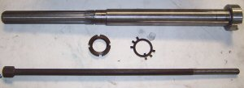

Belt Drive for the Industrial Hobbies/Rong
Fu Mill
Part 1: Design Notes
(aka "A Mini-Blog About Bearings
and Spindles")
This page is currently in blog format as it is just my
research notes for the project. Spindles are hard to build properly, which
is why they are so expensive.
You can use a 3 phase input VFD, and power it off of single phase. You just need to derate the VFD by a factor of 1.73 to account for only a single phase of power.
Or to put it in more useful terms, you need to buy a more powerful VFD to accommodate your 5 HP motor, using the formula of (5 HP)* 1.73 = 8.7 HP.
This doesn't mean you are drawing 8.7HP worth of current. The current max current draw off of 230 V single phase for this inverter is approx I=(5 HP)*(746W/HP)/(230V * 0.85 * 0.85)= 22A (last two 0.85 factors account for the inefficiency of the motor and the VFD). Powering 5 HP off a single phase 230V circuit is doable, and since the VFD is acting as a soft-starter, and limiting the starting surge, it is much less problematic than powering a 5HP cap start-run straight off the same circuit.
This is a common practice, and the VFD manufacturers usually provide instructions about doing this.
----------------
My newer inverter welding machine is connedted like that too, you just use the two 230 single phase leads and leave the third lead unconnected that would be used for three phase, it is derated some though.
Exploded view of the mill head. This conversion involves the part with the red arrow...
The sleeve contains the splines that engage the spindle. A gear had to be turned off the original...
Components...
Bearings will be used to support the sleeve...
Here the stack is assembled with the bearings. Motor pulley to the right...
And here it is fitted to the top of the spindle case...
Bottom view...
Ready to receive the motor...
Ready to run, save bolting rather than clamping the motor mounts. The gizmo on top is so the power drawbar can squeeze instead of push and avoid damaging spindle bearings...
Here are the Nachi angular contact bearings he ordered from VXB:
There's a formula to get the cc's of lube, it is the last to digits of the bearing number x 5 x .06. This will give you the amount of cc's per bearing.
ex for bearing 7008:
08 x 5 x .06 = 2.4 cc's of lube.
Teco Sensorless Vector VFD
Saw the Teco 7300CV written up in a CNCZone thread. Several of the long-time posters like the drive and it is a sensorless vector which is what I'd prefer (broad torque band to reduce the need for belt changing). They gave a link to one with a pretty good price from Factorymation too.
Kelling 3HP Brushless DC Motor Setup
This seemed like a nice setup from Kelling if 3HP is enough. Unfortunately, the later threads I've read indicate the controller is not reliable and there are some questions about whether it really produces 3 HP. I'll leave this in here so people can find it, but I've gone back to thinking about a more traditional VFD setup.
The rpm range is 400 - 6000 rpm. The controller is PWM-ready, so is easily interfaced to Mach3. There is also a charge pump/E-Stop input. The motor is a brushless DC, so it should last a good long time. The power supply is integral so you can plug it into either 110 or 220, and there is even a nifty LCD tachometer that shows the RPM.
Judging from the video, it isn't real fast on acceleration, but it isn't terrible either--about 6 seconds to ramp the entire range from S400 to S6000. You'll definitely want to think about using a G4 Dwell in your g-code though.
3HP is not too bad. I had to cannibalize my 3HP VFD I had bought for the mill so I could run my big bandsaw, so I will need to be in the market for something else. This would definitely be another setup to consider instead of a VFD + AC motor. It'd be cool to have one with both an "Aluminum" and a "Steel" speed range. The Steel would gear down the 400-6000 rpm range to maybe 100-1500 rpm, while the Aluminum would go the other way for a range of maybe 550-8000 rpm. That Steel range might be too low, so a 1:2 ratio would give 200-3000 rpm. I need to play with it on G-Wizard to see what ranges I'd favor.
There are some issues if you read on in the CNCZone thread. Also, it appears that $229 will not buy you both the motor and controller. Maybe not as godo a setup as it seemed. Back to sensorless vector drives for me!
Another Preload Measuring Setup
Given a dial indicator to measure deflection, and a known preload that is to be established, here is a fixture to measure the deflection and hence the spacer required to create a given preload:
A Hydraulic Scale for Measuring Bearing Preload
Here is a hydraulic scale for measuring preload on bearing pairs similar to what I describe near the bottom of this page:
The idea is to use the scale with a test cell to measure the displacement of the bearing inner race when the appropriate preload is attained. Once that has been determined, spacers can be machined that deliver the same displacement and hence the same preload. There is some good discussion about this on the PM boards.
The Value of Spindle Wall Thickness
The stiffness of the spindle goes up as the fourth power of the wall thickness according to some information I saw in one of the bearing catalogs. That means you want the largest possible bearings you can afford because a small increase in the thickness makes for a much stiffer spindle.
How thick is thick enough?
A Mazak QT-20 lathe runs 120mm ID bearings on the spindle and has a spindle bore of 2.44". That works out to a wall thickness of about 1.142" or about 29mm.
Now let's say we want to build a lathe spindle with a spindle bore of 2". Let's give it a 1" wall thickness, so we need bearings with 4" ID which is 101mm. Since bearings come in 5mm ID increments, we can look at a 100mm or 105mm ID, which would be a 7220 or a 7221 angular contact bearing.
Brand new Nachi 7220 CYDUP4 bearings are $1351 each and you need 2 of them. Ouch!
I can see some others on eBay such as an SKF 7221 BECCM for $249.99. Better, but still painful for an experimental spindle project.
The Holy Grail: Preload via Bearing Spacers
I finally tracked down some real information on how to set angular contact bearing preload via spacers on the SKF web site.
Consider two bearings with spacers connecting their respective inner and outer races. By making these spacers slightly different lengths we displace the bearings in such a way as to preload them. The configuration looks like this:
As we grind away at the spacer faces, we achieve the following:
Necessary spacer ring width reduction
Preload change
Width reduction
Value
Spacer ring between bearings arranged
back-to-back
face-to-face
Increasing the preload
A to B
a
inside
outside
B to C
b
inside
outside
A to C
a + b
inside
outside
Decreasing the preload
B to A
a
outside
inside
C to B
b
outside
inside
C to A
a + b
outside
inside
So, for example, suppose we have a pair of AC bearings arranged in a back-to-back configuration. If we want to increase the preload we need to reduce the width of the inner race spacer. Note that A, B, and C refer to bearing preload classes. So if we wanted to increase the preload from class A to class B, we would reduce the width of the inner spacer by amount a. Here are the a and b amounts:
Okay, let's work an example. Let's say I have a pair of 7207 CD bearings that I want to preload. The minimum spacer size difference I might use is a, which is 9 micrometers. That's 0.009 mm or 0.00035". The largest displacement I might use would be a+b = 21 micrometers = 0.00083". Pretty small spacer size difference!
Bear in mind that these differences are used to step of from preload class A to B or C. Those preloads for the 7207 CD series are 60, 120, and 240N for class A, B, and C respectively. Let's compare:
- Going from A to B increases preload 60N, and requires a 0.00035" spacer.
- Going from B to C increases preload 120N, and requires a 0.00047" spacer.
- Going from A to C increases preload 180N, and requires a 0.00083" spacer.
We can extrapolate that to go from no-preload (i.e. we bought raw bearings that are not ground for preload) to the class C preload (i.e. 240N preload) might take something on the order of 0.00118" or a tiny bit more.
In terms of the spacer rings themselves, SKF had this to say:
The spacer rings should be made of highgrade steel that can be hardened to between 45 and 60 HRC, depending on the application. Particular importance must be given to the plane parallelism of the face surfaces, where the permissible shape deviation must not exceed 1 to 2 µm. The overall width of the inner and outer spacer rings should be identical.
The most accurate way to do this is to process the width of the concentric inner and outer spacer rings in one operation.
Making the rings to the requisite accuracy is definitely a grinding operation since we're measuring progress in tenths. These rings are not going to be very wide either. Let's say not more than the width of the bearing itself.
We will mount the pair of bearings on the spindle nose against a shoulder on the spindle. The inner race spacer will go between the bearings as will the outer race spacer. A precision nut will thread onto the spindle nose and down onto the inner race of the bearing stack to hold it in place. The nut is precision simply because it has been faced so that the surface against the bearings is flat.
Getting the Good Grease
If you scan way down this page you'll see my write up about oil lubrication of spindle bearings and the chart that shows bearing rpms versus the dN. Really good bearing grease can achieve a much higher dN than the wheel bearing grease you were tempted to use from the auto part store around the corner. The best spindle greases come from a company called Kluber. The trick is finding the stuff in small quantities without breaking the bank. There are a variety of grades available.
One good one is Kluber Isoflex NBU 15 available from:
- Kluber NA: $22.45 (You have to register to access the online store)
Update: Ordered a tube of my own from Kluber NA on April 27.
Delta Inverters
The inverter is the thing I'm researching quite a bit at the moment. I want one I can use to effectively make the spindle a big servo drive. At the very least, it needs to do spindle positioning for tool change, and at the most, it should accomodate rigid tapping. The Hitachi mentioned below would work, but it's expensive. Looking around at what other machine tool builders have used, a couple using Delta drives. The drive that Dave DeCaussin (the "D" in "Fadal", so he knows a thing or two about CNC) uses in his video below is almost certainly a Delta VFD-M:
Interesting, if true, because that's a pretty cheap sensorless vector drive. Looking through the manual, it does have provision for a PID feedback loop and an index sensor.
Suppose you want
to build a toolchanger that requires spindle orientation. While we're add it, let's do rigid tapping. And let's require an extremely broad torque range for the spindle to minimize the need for any gear changes. That's a hard task, but I'm starting to think the Hitachi SJ300 with the optional SJ-FD encoder board might do the trick. The SJ-FD, in particular, looks like it provides something called "pulse train mode", which looks suspiciously like step/dir control.
The whole thing is not cheap, and requires 3 phase power input to boot.
Spindle Orientation
for Drive Tangs
Suppose you want
to run a 30 taper. It has drive tangs, so you need to be able to line
up your spindle properly with the tangs to build an automatic tool changer.
Most of the commercial VMC's are using a servo to drive the spindle (even
if it is a fairly ordinary motor with a fancy drive). That's one approach,
but not cheap. Try looking for a 2 or 3 HP servo drive and motor!
Another thought
is to use a smaller stepper that can be disengaged to index the spindle
for tool changes. You want to disengage it because if it's driven all
the time it wears out the stepper and it generates back EMF that will
fry the servo drive. At the least you need to electronically disengage
it.
But there is yet
another
way that I just saw on CNCZone. NEATMan suggests using a cam action.
Imagine a cam that looks like this and is clamped to the top of the spindle:
Now let's say
we have an impact wrench style powered drawbar or an air cylinder that
compresses a Belleville spring stack. Either way, there is a downward
motion. We use that downward motion to push a roller equipped assembly
against the cam. The roller will then turn the spindle until the roller
is at its lower point, which should line up the indexing for the drive
tangs.
Clever!
Vector Drive
Magic
I've been keeping
an eye on vector drives for a little while now. Essentially, they are
a "better VFD" to drive an AC motor with variable speed. Why
better? Because they enable a wider speed range without loss of torque.
I read a white
paper by Reliance Electric that indicated you could expect a 2:1 range
for a regular VFD, and a 4:1 range with a vector drive. In other words,
run your motor at up to half speed without losing torque with a normal
VFD, and 1/4 speed with a vector drive. Why does this matter? Because
the speed range you need to cover the gamut of machining tough steels
all the way up to aluminum and soft materials is huge. To span a range
of 100 rpm all the way to 8000 rpm (still nowhere close to what a lot
of CNC's run today) takes an 80:1 range!
That's why you
need gear changes, back gears, step pulleys, variable pitch pulleys, or
a host of other mechanical transmissions used on different machine tools.
But those transmissions are a hassle to deal with too, especially if you
want to build your own machine, or radically
alter the performance envelope of you spindle.
So it was with
some interest that I came across a Sumitomo
Vector Drive spec. I guess a good vector drive these days has more
range than Reliance gives them credit for. A sensorless drive is one you
could just hook up like any VFD, and Sumitomo claims a range of 120:1
for their HF-430 unit in sensorless mode and that with a speed accuracy
of 0.5%. But it gets even better. Add the encoder board and put a suitable
encoder on the motor and now they're claiming a range of 1000:1 and speed
accuracy of 0.05%! That's starting to be quite a range, and these drives
have gotten a lot cheaper over time. I came across this particular one
in an eBay buy it now for $249 for a 3 HP unit.
The only thing
missing from it seems to be true servo operation, or at least a means
of parking the spindle at a known location. True servo operation would
allow the spindle to be indexed to any arbitrary position. You can imagine
that would be handy if you wanted to set up your lathe spindle with a
3 HP motor (or more) and treat it as a C-axis. Index to a location, put
an air powered spindle on your CNC gang slide, and you can suddenly drill
a bolt circle for a flange under CNC power. A parking position would make
implementing a tool changer for a mill a lot more feasible. Park the spindle
in a known location and the "dogs" on the toolholder are properly
lined up.
Principles of a Spindle Oil Mister
Commerical VMC's running at
higher speeds (10K and up) use an air-oil mist to keep the bearings lubricated
and cool. It works along these lines:
Fadal's Spindle Transmission Using Ribbed Belts and
Idler Pulleys
Downloaded a set
of manuals for a Fadal 4020. It's amazing what you can learn from
these. There are exploded diagrams and detailed maintenance procedures.
The two things that interested
me most were the details of how the toolchanger works, and the details
of how the 2-speed transmission for the spindle works. The latter is particularly
intriguing for this belt driven spindle project.
I can't quite fathom all the details from the drawings and pictures, so
I posted
a question on CNCZone on a likely Fadal thread I found. If what I
suspect is true, it would be a slick way of building a 2-speed transmission
to extend the speed range beyond what a VFD will comfortably deliver.
Hopefully the gang on the 'Zone will fill in my blanks.
Here is a picture of the idler assembly, $800 to buy one!
Fadal Idler Pulleys...
The system has 2:1 pulleys on the motor and
the spindle. There is a ribbed belt on each, a 315K10 if that matters.
To engage one of the speeds, the idler pulley is triggered to apply tension
to the belt being engaged by an air cylinder, visible in the picture above. A belt guide keeps the belt that isn't engaged from getting tangled up:
Fadal Spindle Belt Guide...
Node the ridges, and the way the top belt has a shelf to support it. The ridges allow a little bit of belt slippage without too much surface area for the belt that is disengaged. Not too hard to imagine the bottom belt
just sitting there quietly. If tension is removed, it will flex out and
not be driven. In addition, it is held slightly out of the way by gravity.
Given the ratios available, the "hi"
gear will drive the spindle at 2x motor speed and the "lo" gear
will drive it at 1/2 motor speed. Couple that with a 3600 rpm motor and
you should have a range that extends from a hundred rpm all the way to
7,200 rpm. If you can overspeed the motor safely, you can get to the magic
10,000 rpm number. The Fadal-style transmission is also relatively compact.
It seems an ideal addition to the project if I can figure it out. I might
even build a manually operated prototype and look into air cylinders later.
Another Belt Drive for the IH Mill is in the Offing!
What ho! The game is afoot!
Cruiser is documenting his belt drive conversion experience
over on
the CNCZone as we speak. In the same thread he has also gotten jiggy
with the idea of attaching some linear slides to the sides of the IH column
to help facilitate the Z-axis and overcome some of the stick slip from
the poor marriage of a heavy head and very average dovetail ways. That's
also quite an interesting mod:
Cruiser uses a router tied to the
existing dovetail slide to cut a bed for his linear slides. Cool!
Here is one "teaser" photo:
Go check out the CNCZone thread for full
details!
5/12/07: I thought I'd add
a little progress update. Cruiser has completed his belt conversion. One
thing Cruiser mentioned is that his belt drive is not working very well
at slow speeds--torque falls off rapidly. I believe he's running a little
under a 2:1 ratio on the motor to get it to not quite 6000 rpm. The motor
seems to be good to half speed and then torque falls off rapidly. This
may be a problem for cutting steel, although he has tried some passes
at 3000 rpm with limited success (currently fighting a noise problem of
some sort).
My conclusion on this is that a back gear
of some kind is needed for low speed operation. There's just too much
loss of torque at low speeds if you try to run belts directly with no
ability to change gear ratios. One could use something as simple as cone
pulleys to provide different rations, or something more complex like the
variable pitch pulleys I have discussed below. Another idea is to use
a much bigger motor, so that the torque drop off is less noticeable. For
example, these mills start out at 2 HP. A 5HP motor should notionally
be able to run at 1/4 rpm and have the torque of a 2 HP.
To get an idea, I did some rough back of
envelope calculations. Let's say your motor is great down to 1/2 rpm,
so a 3400 rpm motor is good at 1700 rpm. Let's further say you want to
preserve torque to run at 100 rpm. I've worked out some possibilities
in this spreadsheet:
The spreadsheet estimates horsepower available
on the assumption that:
- The motor will deliver full horsepower
down to 1/2 speed.
- Below 1/2 speed, HP falls of in direct
proportion to how far the rpm is from rated speed.
- You can't run the motor over its rated
speed.
I've experimented with drive ratios, which
are listed along the top 2 rows, as well as motor horsepower, listed right
below. The numbers in the sheet are "estimated horsepower".
They're likely bogus as exact horsepower figures, but helpful as a guideline.
If I had less than 0.2 horsepower, I marked that off in pink as being
unusable. If I had less than 0.5 horsepower, it is marked yellow--probably
usable if you go slow with a cutter that won't take much horsepower. To
give an idea of some high horsepower operations, I played with ME Consultant
Pro and came up with big twist drills (always use lots of power) and a
4" indexable face mill. When cutting tool steel, they need 1.2HP.
This just to give some "worst case" checks.
My conclusion from all of this:
- Bumping up to 5 horsepower doesn't buy
you a lot more speed range. It's pretty similar (not surprisingly) to
a 2:1 back gear.
- A 2:1 back gear is essential for lower
horsepower motors just to survive with steel. 5 HP with a 2:1 back gear
gets you all the way down to 100 rpm.
- 5:1 back gear is too wide a spread with
a 2 HP motor. You'd have a dead zone from 800 - 1500 rpm.
- 3:1 back gear 2HP looks about right to
me.
I like the use of a variable pitch pulley
for system for back gear. Hey, if it was good enough for Bridgeport, its
good enough for me!
You can use the variable pitch as your hi/lo
shift mechanism. That means the vari pulley needs enough total ratio to
cover the back gear + high speed. So, using the numbers above, for a 6000
rpm spindle that's 2 * 1.8 = at least a 3.5:1 vari pulley setup. For an
8K spindle (which I'm aiming for), you'd need 4.8:1. I'd run the system
with preset stops. Probably 3 stops on the range is good, and use the
VFD to fine control speeds within a stop.
A 2-stage system could use a 2:1 back gear
and a 3:1 varispeed to get up to a 6:1 advantage, for real power down
low. Some kind of tumbler system like the lathe guys use could work for
the back gear shift.
An alternate gear train option would be a
planetary gear set for low speed operation.
It seems most of the time that preload is going to be
specified as pounds. For example, NCCams claims that 150lbs for a pair
(75 lbs each) is the proper minimum loading for angular contact bearings
holding a ballscrew. I keep trying to envision how to go about getting
the bearings ground for that sort of preload. I presented my load cell
idea below, but here is another idea.
Let's build a little fixture that uses some Belleville
washer springs to come up with 75 lbs of preload. I can get 40lb Belleville
springs from McMaster-Carr very
cheaply. These springs are 0.312" in diameter, 0.025" thick
uncompressed, and they reach their desired load after 0.004" of travel.
So let's design a preload fixture:
The preloader works by applying compressing
the Belleville washers (red) with a 1/4-20 socket head cap screw (blue)
from the bottom. This compression is transferred by an anvil (green) that
meets up with the bearing's inner races (bearing is purple) and forces
them up by whatever amount the 75 lbs manages. Before use, the fixture
is calibrated by placing the desired preload weight atop the anvil and
screwing in the cap screw until the weight is just lifted up.
Once calibrated, a bearing is placed on the
anvil, and the slotted top piece is bolted down onto the fixture to hold
the outer races flat against the surface of the fixture. A small section
of the bearing's inner races will protrude. The fixture with bearing needs
to be run through a surface grinder until it "sparks out" against
the outer races, indicating that the inner races are now flush despite
the preload.
If the fixture were to be used a lot, various
sizes of cap and top anvil could be made up to suit different bearing
sizes. The only requirement is that the anvil not contact the area very
much outside the inner races, and the cap be made to only hold down the
outer races and provide access to the inners.
I designed this fixture to be largely made
on the lathe because that's where I think most will get their greatest
accuracy. For best precision it seems to me the top and bottom of the
cap as well as the top and bottom of the fixture's main barrel should
also be ground flat and parallel. The slot in the cap need not be precision,
and can simply be milled out.
Addendum (12/9/08)
Slocum's Precision Machine Design book describes
a method very similar to this
for grinding angular contact bearings for preload.
On the Matter of Cheap vs Expensive Angular Contact
Bearings for Ballscrews and Spindles
Without ball bearings of various types, machine tools
would be impossible. Their most critical applications involve ballscrew
mounting and spindles. Unfortunately, these very same critical applications
often call out for very expensive bearings that are out of reach for hobby
class machine work. I have a confession to make: I harbor a deep
resentment for those expensive "machine tool quality" angular
contact bearings.
It may be an unreasonable resentment from some perspectives.
NCCams over on CNCZone will tell you all day long that you get what you
pay for and you have to buy the most expensive bearings you can't afford,
but my resentment leads me to wonder whether it is all really necessary.
Yes, if I'm building a vertical machining center with micron accuracy
that's capable of 600 ipm rapids, I'm sure they're necessary. NCCams has
built a precision machine used to make camshafts for NASCAR winning seems,
surely a very exacting application, and one that needed great bearings.
But do I really need those costly bearings to do an 6K
rpm spindle for a hobby mill? Do I need them for a ballscrew bearing
block on a machine I hope will be repeatable to a thousandth? I feel the
resentment is reasonable for the hobby machines. Someone needs to speak
for them!
There are tantalizing clues about this conundrum that
I run across from time to time, and it always perks up my interest. Some
examples:
- I am told by various sources that garden variety bearings
of today are every bit as accurate as the machine tool quality bearings
of the 40's and 50's.
- Many Asian-built machines such as the Tormach mills
do not use ABEC7 bearings, they get by on lesser grades.
- See my blog post below "When the wrong bearings"
wherein I explore the use of multiple deep groove bearings to achieve
levels of stiffness comparable to angular contact bearings. I can't see
why 4 of these dirt cheap bearings couldn't be made to perform like $400-600
worth of expensive AC bearings. This article is also copied on the belt
drive page.
- See my notes on the belt
drive page about how to go about hand fitting unmatched bearing pairs
to be preloaded duplex pairs.
- I constantly see examples where machinists are able
to get superior performance from worn out or inferior machinery because
they know the right tricks. Why can't that be true here too?
All of this will sound like a lot of sour grapes belly
aching on costs and snake oil selling to those professionals who think
nothing of just specing the expensive bearings designed to do the job.
They may be right, but I have a sneaking suspicion there is more to it
than this. Why might the professionals use expensive bearings if cheaper
ones would do? I can think of several reasons.
First, look at it from the standpoint of manufacturing
repeatability. Machine tools have to be warranted to certain performance
levels despite variations in their construction and component parts. Tightening
up the specs on the components makes it less likely the tolerances will
stack up poorly and a machine will leave the line that isn't up to specs.
The science of Six Sigmas and quality control will tell you it is cheaper
to set up the manufacturing process to avoid these mistakes in the first
place rather than find them after the machines are built and have to rework
the out of spec machines. So the overall cost to mass produce a machine
may be less while the individual cost of a single machine may be more.
Second, consider the warranty aspects and especially durability
and wear considerations. An expensive machine tool sold for production
business use will be expected to run tirelessly around the clock day after
day in order to justify its cost. A hobby or light use machine need not
be so durable in order to fulfill its purpose. Also, for many manufacturers,
the warranty cost of a failure is very expensive to cure. The cost to
an individual to fix their hobby machine themselves may be so much lower
they're much more willing to risk it. I read somewhere on CNCZone of a
fellow running a CNC router shop that uses hardware store routers and
buys crates of bearings for them. He says it costs about $2.50 to replace
each bearing and he gets 100 hours of continuous routing from a bearing.
To him it is worth it to keep on replacing cheap bearings. To Haas, who
sold you a very much more expensive gantry router and a warranty that
causes them to have to send someone out to fix your bearings if they break,
it isn't worth it.
Third, commercial machines have a radically different
performance envelope than hobby machines. We kid ourselves we can do what
they do, but we can't. We may be able to get a part made that is very
close, but it will take us much longer to do it. We don't run nearly the
rapids, we often run steppers instead of servos, cutting loads are probably
much less, we are babying our cutters and our machines, while the pros
are cranking out 110% on the spindle load meters and creating so many
chips our little home shops would be buried in no time if we tried it
(not to mention all the other problems!). What we really care about most
in these hobby class machines is accuracy and repeatability, and not all
that much of that. Maybe someday the cutting speeds and efficiencies will
matter to us, but for now, we'd just like to get the parts made reliably
to a thousandth or so. I submit that this is a far simpler requirement
than what most of these high end expensive bearings are being designed
to deliver, and that we can therefore get by on less. The level of accuracy
and performance needed to cut precision cams to be used in zillion dollar
NASCAR racing may be a touch more than what we really need to build tabletop
steam engines.
Lastly, there is a labor intensiveness factor that matters
more to the manufacturer and less to the hobbyist (or to the Asian manufacturer
for that matter!). If I am a hobbyist, I can take the time needed to take
two relatively unmatched angular contact bearings and grind them for a
desired preload. I can then hand fit them to the shafts and bores they'll
live in, lapping, honing, or using whatever means is necessary to achieve
a good result. If an experiment of this kind is marginal or fails, I can
always try again and perhaps do better the second time. Most of the investment
I have in is just time. OTOH, if I am a manufacturer, unless my labor
is extremely cheap, I want no part of that process. I will spend quite
a bit of premium to buy a matched pair of preloaded AC bearings off the
shelf so I don't have to mess with grinding them and trial and error.
A really fancy set of these bearings is maybe $800. It takes surprisingly
little shop time for someone to run up $800 of labor, and they may screw
it up! If I just buy the bearings, they're guaranteed and someone else
takes the risk for the screw ups. Hence I just buy the bearings if I'm
a manufacturer. Things were not always this way. Bridgeport used to hand
fit spindle bearings, for example. Not because it made a better mill,
but because it was cheaper than buying more expensive bearings at the
labor rates in those days.
This piece has been more of a rant than anything else,
so I understand if you arent' convinced, but let me leave you with the
anecdote I read this morning that set me off. A
fellow on PM was asking about ballscrew bearings for his Bridgeport Series
I CNC. He got on the phone to Bridgeport at the suggestion of one
member, and was told that each axis would cost $650 to $875 just for the
bearings. OUCH!!! He probably paid less than the cost of the 3 sets of
bearings for the whole machine!
Along comes another member with the same machine who bought
a cheap pair of unmatched AC bearings off eBay for $35. He got after them
with a surface grinder to grind the inner races to create a preload condition,
installed them on his machine, and measured 0.0008" play while still
being able to turn the ballscrew relatively freely (too much preload will
make the screw stiff and there will be a tradeoff between less play and
too much stiffness). Backlash of 0.0008" would be fine for hobbyists
wanting to machine with 0.001" accuracy. The price is right and a
small amount of labor delivered this happy ending. Would a manufacturer
do it this way? They probably would in China, but not from one of the
"big name" machine builders they wouldn't!
When the Wrong Bearings May Work for a Spindle or Ballscrew
or, How You Can Make A Mill from a Drillpress
Any casual reader of CNCZone will eventually run across
one of the famous bearing rants for either spindles or ballscrew mounting.
Closely allied are the drill press mill rants. Some
noob will inquire with much enthusiasm how to go about converting the
Asian drill press they just got for $39.95 into a CNC mill capable
of slicing through solid green kyrptonite at 300 ipm with an accuracy
of 10 microns and the old hands will just come unglued at the absurdity
of it all. While this can be entirely entertaining to watch, one does
feel a bit like the beginners are receiving an initiation flogging they
don't really deserve and are ill-equipped to understand.
The bearing question is similar. Someone wants to mount
a ballscrew or spindle in "ABEC7" skate bearings that were purchased
cheaply on eBay and the ranting from the old hands starts in again. Pretty
soon the fur is flying and we're talking about the need for $800 20TAC47
bearings on an Asian mill that didn't cost that much more than that
and everyone wonders how we got there.
What's funny is that every now and again, someone actually
manages to do what the experts have said is impossible. For example, there
is a Mech E professor that has built a pretty
nice little milling machine from a drill press:
+=
You too can build a milling machine
from a drill press...
Someone commented that this design was a
nightmare and the guy obviously didn't know what he was doing because
he had installed 5 deep groove ball bearings and a single tapered bearing
that was in backwards of all things. You just can't do that--it ain't
right!
"Hmmm," says I. When I hear that
you can't do something, I kind of want to know why the guy did it anyway
and how well it worked. It occured to me that perhaps this guy was clever
like a fox. I sniffed around his site a bit more and learned he was a
Professor of Mechanical Engineering with full Piled Higher and Deeper
credentials. Now I am nto one who is intimidated by credentials having
attended graduate school and met many of these sort of fellows. At the
same time I do not immediately assume any PhD is an idiot either. This
guy piled on 5 deep groove and 1 upside down tapered roller bearing for
a reason, and it became my mission to figure it out.
It didn't take me too long to decide that
maybe he was just stacking the bearings to make up for their inherent
weaknesses. One often hears about stacking 3 or even 4 angular contact
bearings to increase rigidity. So I dragged out my bearing catalogs and
had a look at what this might mean.
From the NSK bearing catalog I found a nice
comparison of the strengths of various kinds of bearings. We can see that
deep groove bearings are primarily limited in that their load capacity
is not as good as angular contact bearings:
From the NSK Bearing Catalog: e1102c.pdf
Features
Deep Groove Ball Bearings
Angular Contact Ball Bearings
Tapered Roller Bearings
Radial Load Capacity
Fair
Good
Good
Axial Load Capacity
Fair in Both Directions
Good in One Direction; Takes 2 bearings for 2 directions
Good in One Direction; Takes 2 bearings for 2 directions
High Speeds
Excellent
Excellent
Fair
Accuracy
Excellent: All tolerance classes available
Excellent: All tolerance classes available
Good
So I decided to try to set up a comparison
of the radial and axial load capacities for similar sized bearings of
different types. There are formulas in the NSK catalog that may be used
to compute the load capacity of up to 4 stacked bearings:
Double: 1.62x Radial, 2xAxial
Triple: 2.15xRadial, 3xAxial
Quadruple: 2.64xRadial, 4xAxial
You can see that axial loads are additive
but radial loads don't get 4x the value when you stack 4 bearings. In
fact they aren't even 3x as strong radially when 4 bearings are stacked.
That's going to be the weakpoint I suspect. The results are interesting.
Multiple 6204’s Back to Back
6204's are standard deep groove ball bearings, typically
considered wholly unsuitable for spindle and ballscrew use. You can buy
plain vanilla 6204's for $7.69 apiece while ABEC7 quality 6204's are $77.
Here's what you can get by stacking them:
Radial
Axial
Single
12800
6600
Double
20736
13200
Triple
27520
19800
Quadruple
33792
26400
Consider that for the ballscrew application
the load is going to be largely axial as we are trying to prevent the
screw moving along its axis and introducing backlash.
So how do they compare to equivalent angular
contact bearings?
7204’s
The plain vanilla angular contact equivalent of a 6204
is simply a 7204. Your basic 7204 costs $23.88 so already we could have
bought 3 6204's for the price of a single 7204 and for two 7204's we can
surely stack up our 4 6204's. A matched duplex pair of ABEC7 7204's are
a cool $200.
Here are the specs on stacked 7204's:
Radial
Axial
Single
14500
8300
Double
23490
16600
Triple
31175
24900
Quadruple
38280
33200
Guess what? The double AC bearing configuration
is bested by a triple 6204 bearing arrangement! Now if we want ABEC7's,
the duplex AC bearings are still a bit cheaper, but if we're fooling with
more "stock" bearings, it seems like we can get a more rigid
arrangement for less money using the deep groove bearings.
I'm sure it is probably not quite so easy,
but it is certainly intriguing. It wouldn't cost much to build a test
rig and see how well the deep grooves perform when stacked. Now I'm sure
the bearing gurus are spinning up to full whirling dervish speed to jump
all over this concept, but I remain unrepentant until I see someone hook
them up and make them play.
What about the really expensive bearings?
A duplex pair of the much vaunted 20TAC47B
purpose-built for ballscrews angular contact bearings turns in an axial
load value of 26,600N. That's better than 3 stacked 7204's! However, note
that the quadruple 6204's begins to approach this value at 26,400N. Also
note that 20TAC47B's cost $800 the pair.
Can 4 of these cheap bearings do ballscrew
duty as well as the $800 TAC's? That's a scary thing to spring on the
bearing gurus.
It remains to be seen, but I would sure love
to try the experiment someday!
Variable Pitch Pulleys
I worry about the effective operating range of a belt
driven spindle that has only one drive ratio. The differences in speeds
when going from steel to aluminum are extremely large. While we can make
the motor run slowly for steel with a VFD, it will lose a tremendous amount
of torque in the process. For this reason, most machines have at least
2 drive ratios. A low or back gear is used for cutting steel, while the
high gear is used for aluminum and other materials requiring higher spindle
rpms. One of the mechanisms used to effect these differing ratios is the
classic cone pulley arrangement. This is painful because it requires a
manual operation to swap the belt over to a different ratio.
A little better is a back gear arrangement, which could
be done similar to the "tumbler" reverse arrangement that is
so popular for lathes. If this is done, one would thing the ideal thing
is to have the gears driven directly from the motor such that the output
of the tumbler gears is either 1:1 the motor's speed or 1/2 the motor's
speed. This would then be multiplied via belt pulleys to get to the desired
maximum spindle rpm. For example, let's say we have a 1500 rpm motor and
we want to run at a maximum of 8000 rpm on the spindle. This calls for
a 5.3:1 pulley ratio driving the spindle. If the back gear runs the motor
at 1/2 speed, we would have 2 ranges: 0 to 4000 rpm and 4000 to 8000 rpm.
So even when we run the spindle at 100 rpm, our motor is running at 100/5.3
* 2 or about 38 rpm. If the back gear had a 3:1 ratio, at 100 rpm we'd
be running 56 rpm whereas at 8000 rpm we'd still be running 1500 rpm on
our motor.
This is not bad, but back gears are going to be noisy,
and we will have to fabricate a tumbler mechanism. Another approach to
consider is a variable pitch pulley. In this arrangement, the pulley sheave
is constructed of two halves that can separate and allow the belt to move
in and out to various diameters. It's a really flexible system found in
a lot of "pro" machine tools. Here is the variable pitch pulley
still attached to the motor for a Bridgeport 2J head:
Bridgeport Variable Pitch Pulley...
And a couple of other pictures of the Bridgeport
variable disc assembly:
Bridgeport variable disc...
These pieces almost look simple enough to
build from scratch. My main issue with that is I don't understand them
well enough to be sure my design would work well or to debug it if it
didn't. I am probably better off to try to acquire one.
Variable pitch pulleys are available commercially from
places like Lovejoy,
but they do not look cheap. Interestingly, they are also available from
the go kart industry where they're referred to as "torque
converters" and are much cheaper. The go kart variety cost circa
$60 to 70 for a 3-5 HP capable pulley system capable of giving a 3:1 range.
One difference is that the go kart system changes its ratio based on the
speed the motor is turning at using a centrifigul weight system. I don't
know that you'd want that in a machine tool (although you might), but
it seems like it ought to be possible to replace the centrifigul mechanism
with a manually adjustable system.
For comparison a Bridgeport has a back gear and a vari-speed
(variable pitch pulley) system. The back gear delivers 2 speed ranges:
60 to 500 rpm and 500 rpm to 4200 rpm. From this, we can see that the
back gear has a range of 500/60 = 8.3:1--quite a stout back gear ratio!
The vari-speed system provides a further 8:1 variability range. Meanwhile,
because this was all done mechanically, the motor is free to run at all
times at its designed rpm, ensuring that maximum power is being delivered
to the spindle.
By contrast, most VFD based systems are going to produce
less power as the spindle slows down almost in direct proportion to how
slowly the spindle is run. So the 8:1 range offered by the vari-speed
system on the Bridgie means a reduction to 1/8th the power because the
motor is running so slowly at the lower speeds. With the capability of
maintaining the power supplied by the motor at constant levels due to
infinitely variable pulley ratios, it is no wonder the Bridgeports and
other commerical mills can outperform simpler amateur designs! A VFD can
do a little better than this. According to a white
paper by Reliance Electric, they can hold constant horsepower over
a 2:1 speed range. If you have the cash for a fancy vector drive, you
can expand that ratio to 4:1, which is why the big VMC makers like Haas
use vector drives to run their spindles.
If we add a go kart torque converter to our VFD only system,
it has a 3:1 range. Let's say that rather than running from say 100 to
3000 rpm on the motor, this lets us run the motor at 300 to 3000 rpm.
At the bottom end we're getting 3x as much torque as the VFD-only system.
That seems a decent improvement. Of course the Bridgeport is generating
8x as much power at the lower end of its range, and the ranges are chosen
to be an 8x spread of rpm for that reason so that the motor always delivers
full power. For our example, 300 to 3000 rpm is a 10:1 range that the
VFD has to span. Better than the original 30:1 range, but it means we
may be looking at 1/10th the power at the bottom end. The trouble is the
low end may be precisely where we want more power because we're cutting
some really tough material.
Let's say we add a Hi/Lo back gear system to our go kart
vari-speed system. Further, let's say we're doing so for a 100 to 8000
rpm spindle range, such as we're trying to design for this belt driven
mill head. We have a motor that runs at 3000 rpm. With a 3:1 vari-speed,
if we want to keep the Bridgeport ideal of max motor power throughout
the range, we can allow a 3x variation. So, the top gear would run 2600
rpm to 8000 rpm, and the bottom gear would run 888 to 2600 rpm. Our back
gear would be a matching 3:1 ratio. If we want to run more slowly than
888 rpm in low gear, we're looking at running the range down further than
the vari-speed can compensate for with the VFD. 100 = 1/8th, so we have
1/8th the horsepower available at the slowest speed. Given the VFD allows
a 2:1 range, we may have more like 1/4 the horsepower. If we tried to
cover that whole range without a back gear or vari-speed, we would be
looking at 100/8000 = 1/80th the horsepower at the lowest speed!
One issue that is going to develop from use of a vari-speed
system is getting Mach 3 to understand what speed the spindle is really
moving at. Imagine a system that mates a go kart "torque converter"
to a VFD equipped motor. Let's leave the centrifigul feature in place
so that the torque multiplication at lower rpms is automatic. One wonders
how repeatable speeds will be. Mach is built without a closed loop to
a spindle tachometer, so the assumption is that response to a given Mach
3 voltage level will always produce the same rpm. There is a provision
for a "pulley" setting to allow Mach 3 to take back gears and
the like into account, but this is discrete and not continuously variable.
This concept needs more thought and research, but some
sort of back gearing mechanism or variable speed pulley seems a must for
this project.
How Warm Should Spindle Bearings Run?
The answer is at their design temperature, of course,
but since we are designing this spindle, it is worth looking around to
see what other spindles are recommended to run at. Below are some references,
but it looks like one should shoot for a range of 100 to 140 degrees F.
Keep in mind that we want to avoid a thermal runaway situation where the
heat expands the spindle, which creates more friction, more heat, more
expansion, etc., etc.
The Fafnir Superprecision Machine Tool Bearing catalog suggests that
with optimal design, bearings running synthetic low friction grease
ought to be able to run about 20 degrees C over ambient or about 40
degrees F. In fact, they suggest a proper break-in procedure involves
running the spindle until it reaches 150 degrees F, turning it off to
cool, and repeating the cycle until the spindle stabilizes at 130 degrees
F or lower operating temp. The ideal equilibrium operating temperature
is 95 to 115 degrees F. Maximum temperatures should not exceed 170 degrees
F. Timken's published specs for tapered roller bearings, including bearing
life specs, assume an operating temperature of 130 degrees F.
The belt speeder is designed to plug into
your existing R8 taper and clamp around the quill. Internally, it uses
timing belts and pulleys to multiply the speed of the spindle. A compact
spindle cartridge to the right contains another R8 taper which will now
be travelling at 2.5x whatever the main spindle is doing. You could define
the timing pulleys to create larger ratios if desired. I just did a quick
sketch after hearing Barry mention it to get an idea of what one might
be like.
Some of my thoughts about this setup:
- I'm not real happy with how bulky it seems.
This makes me wonder about rigidity. Serious thought would need to be
given to getting it well clamped to the mill.
- The offset allows access to a short drawbar
for the new taper from the top. If I were to build one of these, I'd want
a power drawbar arrangement there, I've sworn off hand wrenching drawbars
for life since building my power drawbar!
- Since the spindle cartridge is so short,
it may be possible to build it with just 2 angular contact bearings (one
at either end). Need to consider thermal expansion when doing so.
In the end of the day, I am still convinced
a new mill head is the best bet for me, but for a lot of other folks,
a removable spindle speeder may be a nicer idea. Certainly if you have
a big mill like Barry's Shizuoka CNC mill, it's probably hard to consider
building a new head for it.
One other thing that goes through my head
is whether a planetary gear arrangement couldn't be built. I have purchased
on eBay a 4x spindle speeder to look at (it was cheap):
Yuasa Spindle Speeder
My thought is whether one couldn't use the
planetary gearset from an automatic transmission to do this job. They
are available very cheaply from many sources, including eBay. In fact,
I purchased a set to build a fancy collet chuck (another project I still
haven't gotten to!):
Collet chuck with planetary gears
from an automatic transmission...
Bearing Speed Factor (dN) and Bearing Lubrication =
Oil Mist or Oil Lubrication
Bearing speed factor is calculated as follows:
dN = N x (ID + OD) / 2 where N = spindle rpm, ID = bearing
inner diameter, and OD = bearing outer diameter.
So, for the example of this spindle, we're looking at
7207 bearings and 8000 rpm, so we get a dN value of:
8000 x (35 + 72) / 2 = 428,000
What does this tell us? It gives us an idea of what kind
of lubrication we need to consider. Assuming we get the preload correct
for the bearings, we must still get the lubrication right or the bearings
will overheat and fail. If we are even marginally off on preload, we're
going to need some safety margin on the lubrication front as well, so
we don't want to flirt with the theoretical maximums.
The theoretical maximum for grease lubricated AC bearings
is a dN of 850,000. However, if we consult
the literature from Barden bearing, we will see that this requires
a pretty specialized grease to achieve, and that more typical values for
dN are 400,000 to 600,000. My conclusion looking at that information is
that we ought to consider oil mist lubrication for this spindle project.
It has a theoretical limit of 1,500,000 dN, which seems like it gives
a much better margin for error. Oil misters are inexpensive and readily
available, so it seems like it would be straightforward to add oil mist
cooling to a cartridge spindle such as the one we are contemplating here.
Below is a graph showing spindle speed versus bearing speed factor for
the 7202 bearings that will be used for this spindle project.
Bearing Speed Factor for 7207 AC
Bearings Showing Grease vs Oil Lubrication Regimes
It is interesting to note that your basic modern CNC milling
machine spindle, such as a Haas, typically uses oil mist lubrication.
I don't know if I will go to the trouble of an oil mist or not, but it
seems worth considering at least. What's needed is to test the spindle
and monitor temperatures and preloads. If they do okay, there is no need
for the added complexity. If they are marginal, its worth looking into.
The other thought is that it is easy to see why 8000 rpm is a difficult
number for this project as it sits right on the cusp. 6500 rpm or 7000
rpm (if you are feeling luck) would be a slam dunk for greased bearings.
And that's just where a lot of commercial knee mills wind up.
HuFlungDung, who has rebuilt the spindle on his Haas VF3,
mentioned that the oil mist system on the Haas is dead simple:
"FWIW, when I overhauled my Haas spindle cartridge,
which has oil mist, I was expecting some kind of high faluting thingy
inside for the oil mist, but it is dead simple. Basically, the air/oil
line feeds into a sintered bronze filter above the top bearing. That
is it! No special passages, no nothing, just gravity Air comes out the
bottom of the spindle around a close fitting labyrinth end cap. The
oil volume required is very low."
Thoughts About Preload and Duplex Bearings
Anyone researching the problem of building a spindle quickly
discovers that the majority of cost and difficulty has to do with the
bearings. Quality spindles benefit from angular contact bearings fitted
in opposing configurations that maximize their axial and radial stiffness
while providing as little turning resistance (and likely heating) as possible
in the desired operating envelope. The traditional commercial approach
to the problem is to fit two or more angular contact bearings to the spindle
in matched duplex configuration and to use extremely accurate ABEC7 bearings.
This is where the cost enters the equation. There is a high premium paid
for the ABEC7 accuracy, as well as a high cost paid for the duplex pairs
versus just buying two bearings. The reason is that both require additional
manufacturing cost, and also limit the applicability of the bearings so
there are fewer available in the surplus markets. One does scare up the
odd bargain, but it can't be counted on.
It has seemed to me that I can dispense with ABEC7. The
difference in precision between ABEC7 and the next lower grade, which
is ABEC5, is only 0.2 ten thousands of an inch of runout. For any concievable
HSM project, this is not a meaningful difference, provided the rest of
the operating parameters such as desired RPM range can be met by the lower
precision bearings.
What's more difficult is the requirement for duplex bearings.
Duplexing is the process of modifying a set of bearings by grinding the
edge of either the inner and outer races so that when the bearings are
butted up against one another, there is a precise gap. When the gap is
eliminated, it results in a precise amount of preload being applied in
a very controlled way to the interior of the bearings. This is simple,
repeatable, and performs very well in commercial applications, but these
matched pairs are much more expensive than individual angular contact
bearings that do not have to be matched. With individual bearings, one
can create the preload either using springs, or by fabricating a spacer
that forces just the inner (or outer) races apart by an amount that is
similar to the result of the duplex machining operation.
I will leave the spring approach aside as I have doubts
about its stability for a spindle application like this, but I will also
readily admit it needs more research. The problem with the spacer approach
is twofold. First, that spacer has to be accurately machined to very tight
tolerances measured in tenths. Typically they would be ground, though
it is possible also to do most of the work on a lathe. In any event, achieving
these tolerances is hard in a home shop. Second, one does not know what
the thickness of the spacer or shim needs to be to generate the optimal
preload.
My thought on determining the right shim thickness for
a given preload would be to create a special load cell that simulates
the bearing application and use that load cell to measure the effective
preload as various shim thicknesses are experimented with. For a DB configuration,
which is most desireable for a spindle (its the stiffest), the inner rings
would be ground. This is simulated by shimming the outer ring. Now the
load cell has to measure the amount of force needed to bring the inner
rings into contact for a given amount of shim between the outer rings.
The load cell preload testing rig looks like this:
Load Cell Testing Rig for Bearing
Preload...
The load cell (Red), is a simple cylinder
filled with mineral oil and equipped with a pressure gauge. The piston
has a little tool (Light Blue) attached to it that bears against the bearing
inner race (Dark Blue) while a similar tool bears against the second bearing's
inner race. The two bearings are installed in a model spindle (Purple),
complete with shaft, and are separated by a precision spacer. The outer
races are held by another piece of tooling (Gray/White) as well as by
their press fit in the model spindle.
To use the test rig, stand it up in an arbor
press and apply force to the top inner race tool. Force could also be
applied using weights or by tightening a screw. It should be possible
to increase this force until the inner races of the two bearings are tight
against one another. Since force is applied to the top bearing, no load
will register on the lower bearing until the two races are in contact.
At that point, further increases in force are passed through, so we need
to look for the minimum force that will register on the test rig, and
this will be the preload that is generated by the spacer between the bearings.
A thinner spacer will result in less preload, while a thicker spacer results
in more preload. It will be necessary to follow a test regimen that involves
several spacers being tested until the appropriate preload is achieved.
Unfortunately, we need to work our way from thinner to thicker spacers,
which will necessitate making more than one spacer in order to perform
the tests. In this way, it should be possible to create a desired preload
by substituting some labor in this testing and in the creation of spacers
for the purchase of more expensive duplex bearings.
I note from a CNCZone
thread that Misumi will sell you a custom bearing spacer for $7.00.
I'd like to know more about the specs and tolerances, but that might be
just the ticket to preload bearings.
Fitting the Bearings
Fitting bearings is a ticklish business, both from the
standpoint of the levels of accuracy required (measured in 10ths or 1/10,000
of an inch) and from the standpoint that the bearing is delicate, and
the application of too much force while installing can ruin it, while
too little force on the preload limits the accuracy and performance of
the spindle.
Let's start by determining how much precision is required.
I consulted the Fafnir Super Precision Bearing catalog as a good source
for this kind of information. The tolerances on the 2MM series of bearings
in the '07 size we are concerned with are as follows for ABEC-7:
- ID Bore: +0.0000" / -0.00025"
- OD: +0.0000" / -0.0003"
- Seat Width: +0.0000" / -0.0047"
- OD Square With Side: +0.0000" / -0.00025"
- Recommended Shaft Diameter: 1.3778" to 1.3780"
- Housing Bore Diameter: 2.1654" to 2.1657"
(fixed end), 2.1659" to 2.1657" (floating end)
Clearly we're talking just a couple of tenths of tolerances
here!
I had read on 5Bears site of some
techniques which looked like one approach for an HSM to achieve such
tolerances. One must take into account that Swede (who runs the site)
is an exceptional machinist, and that he is doing the work on a Hardinge
lathe (or clone), which was designed for precision from the start. Nevertheless,
I intend to give these techniques a try. What's lacking at present is
sufficient time spend improving my HSS tool grinding skills to get the
geometry that Sweded recommends for a fine shaving cutting tool:
5Bears tool for making very fine cuts in
steel...
Swede comments that you can make cuts no
greater than 0.004" with the tool, but that by using your compound
at an angle for infeed you can cut as little as 0.0002" or less!
That would be handy for sneaking up on tight dimensions.
If one were going to do a lot of this kind of work, purchase
of a used Sunnen honing machine might make good sense. Looking
at Sunnen's site, they are only promising 0.0005" tolerance with
a portable hone, which is about twice what we are really looking for
here. Since most folks aren't going to have a full on Sunnen hone, the
alternative is lapping or using a brake cylinder or Flex-Hone to do the
final tune up. Flex-Hones are also referred to as "chicken pluckers"
or ball hones. I ordered one in the appropriate size (they cover about
a 1/4" range) for the OD of my 7207 bearings off eBay for $35:
Flex-hones are useful for fine
tuning and fine finish of bearing bores...
Another question that arises is how to measure one's progress
to tenths while performing these machining operations? For the shaft OD,
a micrometer would certainly suffice. I'm a bit more concerned about miking
the bearing bore with any accuracy. It seems like one of the three point
Intrimik bore mikes would be the ticket, albeit an expensive ticket at
that. Something else to look out for on eBay! The trouble with three point
mikes is that they can't measure out of roundness--the error is spread
over the three points.
For that reason, the crowd
over on Practical Machinist (not to mention Widgitmaster on CNCZone)
seem to feel a dial bore gage is in many ways a better bet than the Intrimik.
Forrest Addy, in another PM thread, concurs. Forrest also suggest you will
need to lap them to final size and finish to get reliable results. If
you can obtain a dial bore gage with sufficient sensitivity, I think this
is the way to go. The PM crowd also favor the Mitutoyo dial bore gages,
but feel Sunnen have the best, albeit at great cost. Still others argue
that Standard makes the best bore gages. Enco has the Fowler digital bore
gages on sale as I write this for under $200. I am seriously tempted to
order one to cover this base:
Fowler digital bore gage w/ ring
gage for calibration...
Your dial bore gage has to be calibrated for maximum accuracy
as you are using it. The recommendation there is to calibrate it with
gage blocks. You stack them to get to the measurement you are looking
for, but a top and bottom on the stack, and then measure that distance
with the dial bore gage. The last comment I will make on this is that
NSK suggests a dial bore gage be used to check fits in their Super Precision
Machine Tool Bearing Catalog. They note that it is important to check
that the temperature of the components all be the same, an important tip
when measuring to tenths!
In a pinch, telescoping gages with a micrometer are probably
the cheapest method, and a lot of the machinists swear by them. Forrest
Addy suggests the following technique:
As for measuring bores to close tolarences I reccommend
telescope gages. They are self aligning. Insert the tool in the bore,
adjsut it a trifle oversize and snug the clamp, and sweep the handle
through a radial plane until the gage pops loose. One sweep and you're
done. Takes a couple of seconds. Quickly mike the gage without "mashing
the reading" between spindle and anvil. You should be able to hold
0.0002" consistancy in size. Be careful of heat. If the bore seems
to be getting a trifle smaller with subsequent checks, chances are your
mike is picking up heat from your hands, expanding, and making your
appear reading small.
HuFlungDung adds the following useful hint with telescoping
gages:
Hint for using telescoping guages: oil the ends of the
gage, or oil the bore before sweeping the gage through. Part of the
skill is learning how tight to adjust the clamp so it will yield enough
to let the gage tips move in without excessive force.
Mounting the Spindle Cartridge
Commercial units, such as the Setco
belt drive cartridge spindles, are typically mounted using a flange
and machined cylindrical surfaces. Adding a flange either requires completely
boring solid stock or welding a flange to the DOM tubing and machining
both back to trueness. Another approach also found in Setco's line is
a rectangular block for the cartridge. This still requires considerable
machining effort. The likely material for such a block would be aluminum,
although Setco uses gray iron, which is also a possibility. Either a flange
or rectangular block simplifies the task of mounting the spindle cartridge
to the case considerably.
For what it's worth, the Setco cartridge spindles run
with two angular contact bearings up front and two roller bearings in
back. The angular contact bearings are duplex but are not in contact,
and are separated from one another by an inch or two, and are run in a
"DB" (back to back) orientation, not "DF". They offer
an optional 3 bearing nose system for even more rigidity. The design accomodates
swap in of the additional bearing simply by installing a new, shorter
spacer between the original two, which creates a DT-DB combination. Yet
another swap also a quad DT-DB combination to be installed for even higher
performance.
Their F040-030M model is an NMTB #30 taper spindle cartridge.
Mill Head Sketches
Here are some quick sketches in Rhino 3D of the mill head.
It is based on a 3 bearing design, with the duplex ABEC 7 7207CTDULP4's
at the bottom and an ABEC 3 7206 BEP at top. I really think the duplexed
bearings that surround the toolholder will add tremendous rigidity. This
design is based on a couple of off-the-shelf timing pulleys, and on the
Leeson 192074 motor upgrade that Aaron recommends and that is sitting
in my garage as we speak. Based on a top speed of 3000 rpm from that motor,
and the 2.4:1 ratio'd set of pulleys, this yields a top spindle speed
of 7200 rpm, which is right what I am shooting at. McMaster Carr also
lists one larger pulley size, and these sketches will accomodate that
pulley as well. If one uses such a pulley, a spindle speed of 9000 rpm
would be generated at the top end. That seemed a bit much for me, but
the pulley is not that expensive to order and experiment with.
There is a lot that is not considered by the sketches.
For example, how do you go about changing the timing belts or adjusting
their tension? The exact mechanism by which the cartridge spindle is clamped
in place and aligned for precision and rigidity is not detailed here.
I'm wondering if a split clamp arrangement like what one finds on engine
crankshaft bearings wouldn't work. Yet another issue is how the bearings
will be protected from swarf and coolant. This is not detailed. One thought
I have is whether to feed compressed air to the spindle cartridge. This
would have two benefits. First, there is a cooling benefit. Second, it
would provide a positive pressure system that would help blow swarf back
out of the spindle. Ideally it would be arranged so the air only flows
while the motor is running, by using a solenoid valve in the air line.
Cosmetics could be greatly improved with judicious chamfering and rounding
of edges, and I have not specified fasteners at all. I need to make sure
there is the potential for thermal expansion without damaging the bearings.
The list goes on. It's a sketch, not a finished design!
Materials are pretty straightforward. The spindle cartridge
is 3 1/2" OD x 5/8" wall thickness steel DOM tubing. I've checked
and it can be machined to the specs desired for the bearings. The rest
of the mill head is made from 1" aluminum plate. Ideally one should
do a Finite Elements Analysis to optimize and quantify the design. Perhaps
someone on one of the web sites will offer to take a 3D model from me
and perform that analysis. It is tempting to fill the big chamber behind
the spindle cartridge with concrete in order to further dampen any vibration
in the head. With all of the aluminum, it seems unlikely this will make
the head much heavier than the stock gear drive head.
One last thought is that the IH spindle clearly protrudes
considerably above the top of the head. This is due to elimination of
a quill. It would be my thought to cut this off and fit a shortened drawbar
with power changer up there.
On the face of it, this does not look like all that difficult
a project, although it must be completed with some precision. Here are
the sketches:
Overall transparent view of the
head...
The Spindle Cartridge, Timing Pulleys,
and Motor...
Some Detail on the Spindle Cartridge...
Souping Up This Spindle With Duplex AC Bearings
Aaron called out 2 bearings to mount the spindle in the
IH mill as designed, a 7206 BEP at top and a 7207 BEP at bottom. A duplex
pair of 7207's at the bottom would really increase the rigidity of this
spindle setup, although not cheaply. It looks like there is enough bearing
area on these spindles to accomodate a duplex pair, although I would need
to measure it to be sure. One source for such a pair in ABEC 7 accuracy
(very good!) is Bearings
Direct, which will sell a matched pair of 7207CTDULP4 for $347.89.
This would provide a significant step up in rigidity for this mill. Given
that I plan on machining a new head to house the spindle, it would be
straightforward to make provision for a duplex pair. It's mighty tempting,
I have to say!
I was reading another thread
on spindle design on CNCZone and Mike Aber opined that having looked
at 3 different Asian mills, they were all using deep groove ball bearings
and not angular contact bearings. He chose to use that as an excuse to
save the cost of the expensive AC bearings. I choose to look at it as
reason to believe the performance with a nice set of bearings could be
a lot better than the old mill head.
New #30 Taper Mill Spindle Came Today!
I got the spindle from Industrial Hobbies and the bearings
from McMaster-Carr. Nice combo. The finish on the spindle is nicer than
what IH pictures on their web site. Now I'm champing at the bit to turn
it into a mill head! Just have to wait until I finish my other projects
though. I need to research carefully how the bearings needed to be fitted
to both the spindle and the bores in the mill head I will fabricate. The
bearings are SKF's, a 7206 and 7207 angular contacts. Their specs indicate
a pretty high speed is possible, so hopefully my goal of 6000-8000 rpm
will be doable. I should think so in this application which is pretty
lightweight.
Building the mill head will largely be a matter of fabricating
a box. I need to build a box that will properly house the spindle, bolt
to the existing dovetail assembly that the current head bolts to, and
that will be nice and rigid. I'm thinking of making it out of some pretty
substantial aluminum, perhaps some 1" thick stock or even thicker
at top and bottom. I'm thinking of aluminum because it doesn't have the
problem of internal stresses moving it after it is machined, so it will
stay true. While I'm at it, I think I'll set up this head so it gets trammed
in once, and then stays put. There's no need to have a swivel head on
a CNC machine, as well as no need for a quill which just reduces the accuracy
and rigidity of the head anyway.
By taking this approach, I also avoid having to turn down
the shaft of my larger motor to fit the IH gearhead. I can just specify
a pulley for the timing belt that fits the motor as is.
NMTB 30 Spindle for the IH Mill!
Industrial
Hobbies is having a going out of business sale, and one of the things
they are offering is an ISO 30 or NMTB 30 spindle for the IH
Mill. At $65, how could I resist? This is a better spindle taper than
the classic Bridgeport R8, and is really the preferred taper for building
a toolchanger for this mill. Aaron also recommended a set of angular contact
bearings from McMaster-Carr that cost another $100, so I ordered those
too. What I'd really like to do is take these goodies and create a belt
driven head for my mill that's capable of higher rpm's than the current
geared head. The more rpm's the merrier so far as I am concerned. I can
always use a VFD to cut down on the rpm's if need be.
Anyway, this will be one of those very long term projects.
I had to act now to get my hands on one as they were in limited supply
and he is going out of business. We'll see what comes of it.

NMTB 30 vs R8 Comparison of Scale...
NMTB 30 Spindle for the IH Mill!
Industrial
Hobbies is having a going out of business sale, and one of the things
they are offering is an ISO 30 or NMTB 30 spindle for the IH
Mill. At $65, how could I resist? This is a better spindle taper than
the classic Bridgeport R8, and is really the preferred taper for building
a toolchanger for this mill. Aaron also recommended a set of angular contact
bearings from McMaster-Carr that cost another $100, so I ordered those
too. What I'd really like to do is take these goodies and create a b